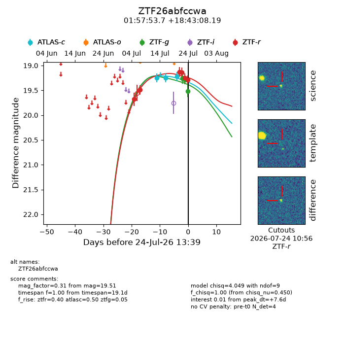
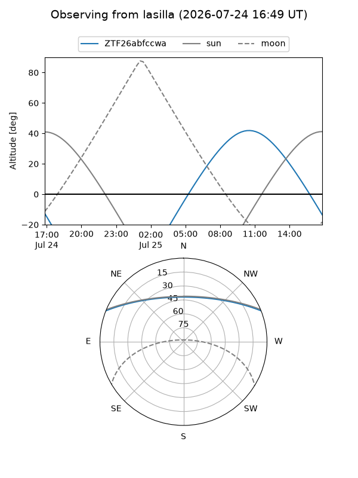
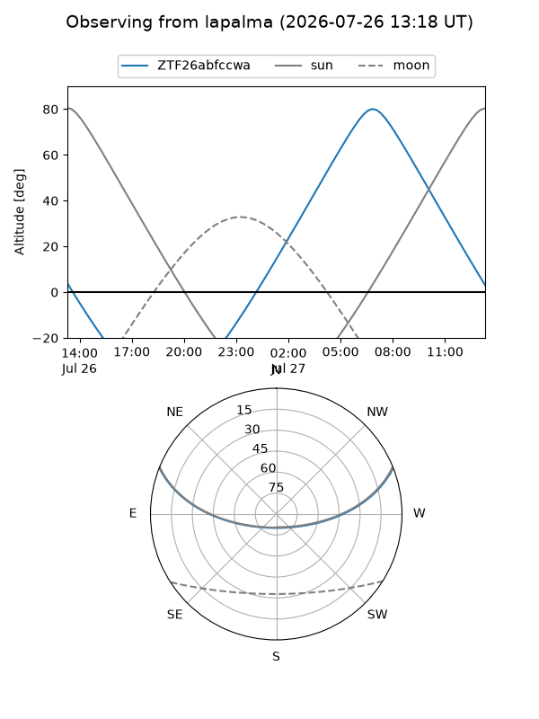
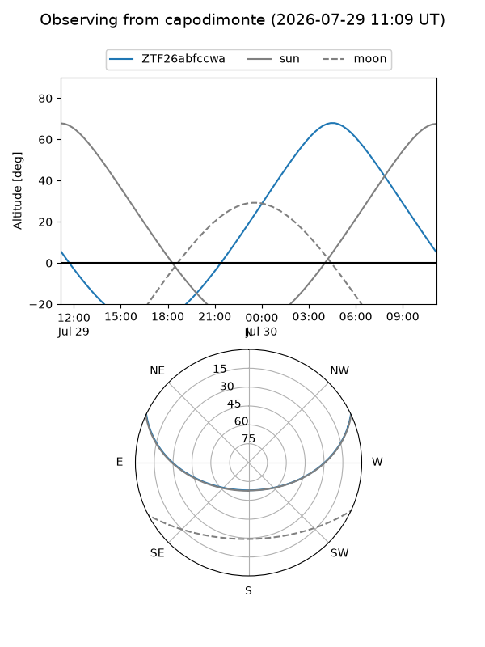
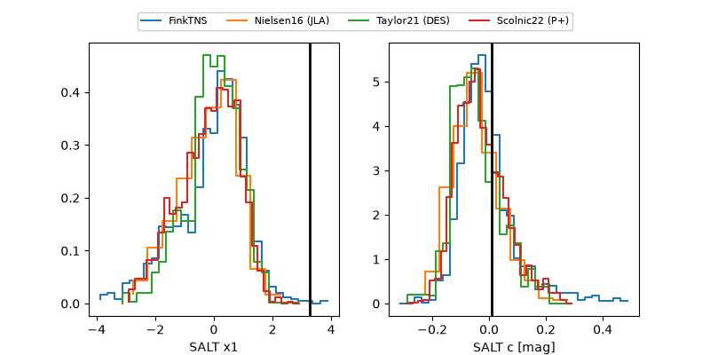

ZTF26abfccwa
Target ZTF26abfccwa at 2026-07-24 13:41
Aliases and brokers:
FINK-ZTF: ztf.fink-portal.org/ZTF26abfccwa
Lasair-ZTF: lasair-ztf.lsst.ac.uk/objects/ZTF26abfccwa
ALeRCE-ZTF: alerce.online/object/ZTF26abfccwa
Direct TNS query: direct search
alt names
ZTF26abfccwa (ztf,fink_ztf)
Coordinates:
equatorial (ra, dec) = 29.4738,+18.71894
equatorial (HMS+DMS) = 01:57:53.71,+18:43:08.19
galactic (l, b) = (144.0965,-41.40550)
Flags:
peak dt: +7.6
Photometry:
last atlasc=19.22, ztfg=19.51, ztfr=19.29
3 atlasc, 3 ztfg, 6 ztfr detections
Lightcurve

Visibility



Additional plots
